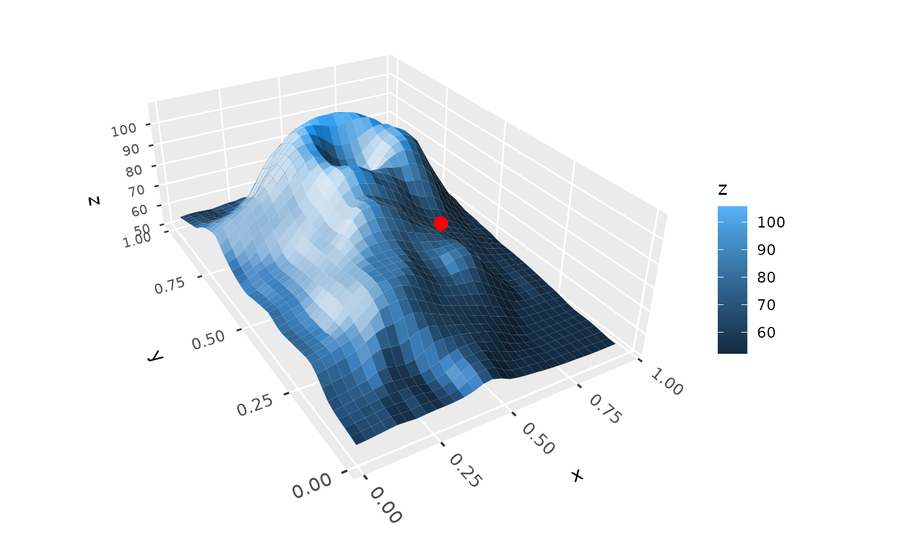
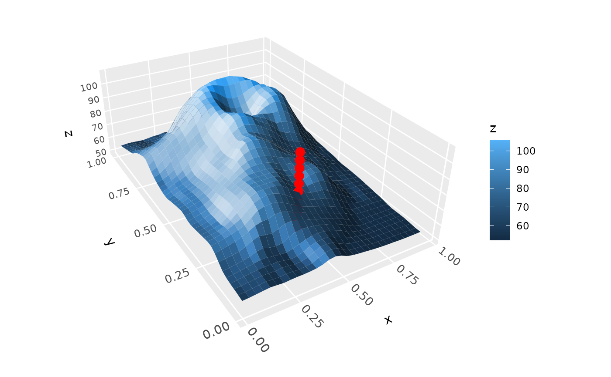

Defines fixed-position annotations to be embedded within a 3D layer.
Annotations are depth-sorted together with the primary geometry, unlike
ggplot2's annotate() which creates a separate layer.
Details
Parameters can be vectors to create multiple annotations of the same type
in one call, with scalar values recycled as needed (matching
ggplot2::annotate() behaviour).
Point annotations
Requires x, y, z. Optional styling: colour/color, fill, size,
shape, alpha, stroke.
Examples
p <- ggplot(mountain, aes(x, y, z)) +
coord_3d(ratio = c(2, 3, 1),
light = light(mode = "hsl", direction = c(-1, 0, 0)))
# Basic point annotation
p + geom_surface_3d(
annotate = annotate_3d("point", x = .5, y = .25, z = 100,
color = "red", size = 3))

# Vectorized: multiple points in one call
p + geom_surface_3d(
annotate = annotate_3d("point", x = .5, y = .25, z = seq(50, 100, 5),
color = "red", size = 3))

# Multiple annotation types
p + geom_surface_3d(
annotate = list(
annotate_3d("point", x = .5, y = .25, z = 100,
color = "red", size = 3),
annotate_3d("text", x = .5, y = .25, z = 100,
color = "red", label = "Look here!",
vjust = -1, fontface = "bold"),
annotate_3d("segment", x = .5, y = .25, z = 100,
xend = .5, yend = .25, zend = 50,
color = "red", size = 3)))